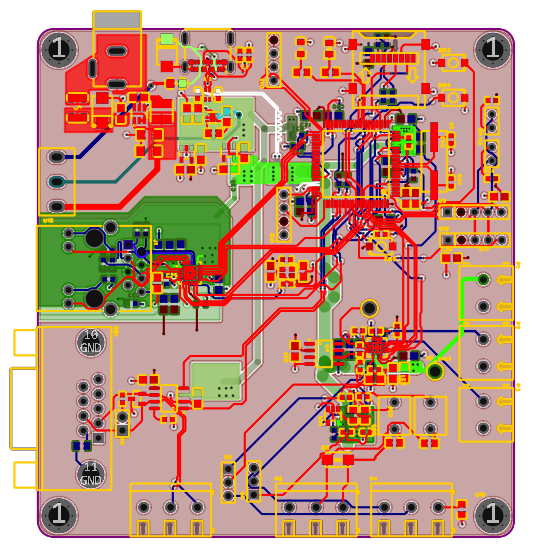
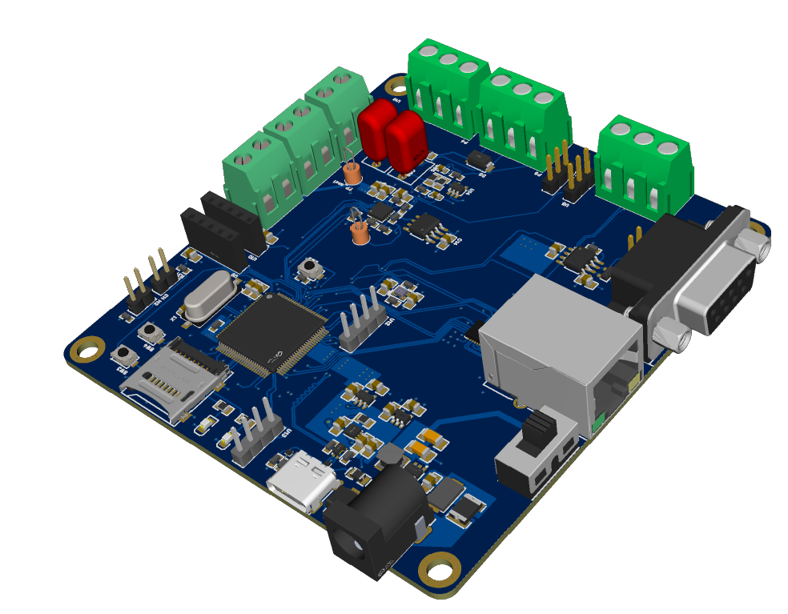
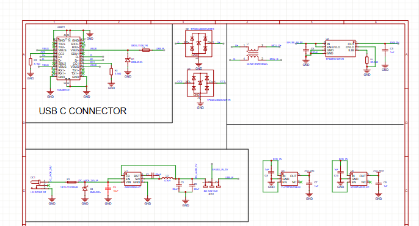

Precision ADC / Mixed-Signal Board
Case study: architecture, analogue integrity, layout strategy, validation approach.
Overview
- ΔΣ ADC (e.g., ADS1220) + SPI to MCU
- Precision 2.5 V reference (e.g., REF5025)
- Input protection + anti-alias RC filtering
- 4-layer PCB with analogue island + controlled return paths


System scope
Although this case study focuses on the mixed-signal acquisition chain, the board is a complete embedded node: precision analogue measurement + Ethernet + CAN + robust dual-input power (USB and DC jack).
- Mixed-signal acquisition: ΔΣ ADC + precision reference + analogue input conditioning.
- Networking: Ethernet PHY with 100BASE-TX differential pairs routed as controlled impedance.
- Field bus: CAN transceiver with proper termination strategy and ESD/TVS protection at the connector.
- Power: USB 5 V and DC jack input with OR-ing/protection feeding regulated rails for analogue + digital.
Power architecture (USB + DC jack)
The board accepts power from either USB (5 V) or a DC jack. The front-end is designed to survive user mistakes (hot-plug, reverse polarity, transients) and to prevent one source back-feeding the other.
- Input selection / OR-ing: prevents backfeed between USB and DC input and supports seamless switchover.
- Protection: input TVS where appropriate, inrush limiting / eFuse behaviour (if used), and reverse protection strategy.
- Rail separation: analogue rail kept quiet (LDO where needed) vs digital rails sized for switching loads.
- Grounding intent: high-current power loops kept away from ADC/reference nodes; short, wide copper for input currents.

Ethernet routing is treated as a controlled transmission-line problem. The PHY-to-magnetics pairs are routed as a
tightly coupled differential pair with controlled impedance and consistent return paths.
Add: a cropped screenshot showing TX/RX pair routing and any serpentine used for matching.
The CAN interface is designed for real-world wiring and ESD exposure. The layout prioritises short transceiver-to-connector
routing, a clean return path, and protection located where it is most effective.
Add: a photo/screenshot of the CAN connector area showing TVS placement and termination footprint.
Images
Ethernet implementation (100BASE-TX)
CAN bus interface
Signal integrity rules used (impedance & length matching)
Key design decisions
Validation